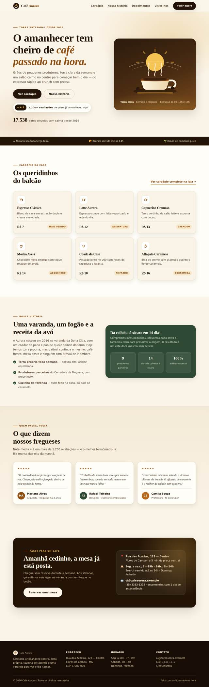

9.0#01
Maestria STUNNING
muse-spark-1.3🧪 técnica construtiva
autores de depoimento INTEGRADOS (defeito da v19 corrigido) zero overflow, microcopy correto, pagina inteira consistente
Prompt
Tarefa-base idêntica (landing Café Aurora, 7 requisitos) + sufixo:
Maestria máxima + padrão STUNNING (WOW à primeira vista) + 6 critérios inegociáveis (tipografia, SVG intencional, autores integrados, 1 CTA, zero overflow, ritmo).